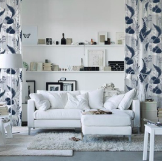
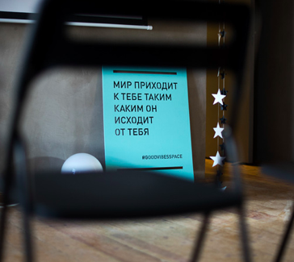
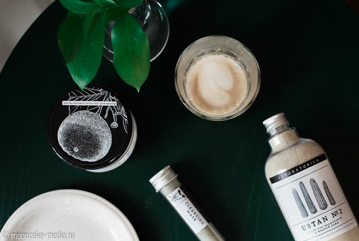

Деонизия Балде | 13/02/2019
Кто в России изучает русскую культуру? На какие произведения может вдохновить деревянное зодчество Карелии XVII века? Зачем участвовать в интерьерных выставках?
Алиса Топчий | 14/02/2019
Как часто, сталкиваясь с чем-то сложным, мы перестаём верить в себя и опускаем руки. Мы не понимаем, что делать дальше, чувствуем себя ни на что не способными. Что делать в таких ситуациях?
Дина Шакенова | 15/02/2019
Петербургский бренд косметики ручной работы, основные компоненты которой растительные и эфирные масла, глины, соли, вода, цветы, травы и различные минералы, которые собраны вручную или специально выращены.